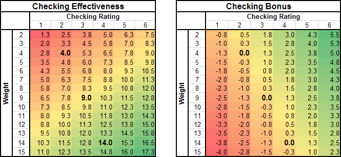

Player Rating Guide
When creating a ROM with custom
player ratings, it's important to keep
a few attributes properly balanced.
1.0 Weight Bug Fix
If your ROM uses the
weight bug fix,
you
need
to
keep
the
checking
ratings
of
the
players
balanced.
This
is
because the weight bug
fix incorporates the checking ratings of players when deciding if a
check succeeds, and it is calibrated to the original game.
- If too many players have high checking ratings, it becomes too
easy to
check in the ROM.
- If too many players are lowly rated, it becomes too difficult
to check.
1.1 Recommendation
In general, bodychecking ratings should be mostly
2's and
3's (a total of
70% between the two, with more 3's
for the defensemen, and more 2's for the forwards), with a decent
amount of
4's (about
20%).
The heavier a player is, the higher their checking rating should
generally be.
Here are the average checking ratings to target for each weight.
If a player is a good bodychecker
for
their
weight, then rate them higher than the value below.
If,
for their weight, they
are a weak checker (or seldom check), rate them lower.
Weight
|
0
|
1
|
2
|
3
|
4
|
5
|
6
|
7
|
8
|
9
|
10
|
11
|
12
|
13
|
14
|
15
|
Forward Avg Checking Rating (0-6 scale)
|
1.2
|
1.4
|
1.6
|
1.8
|
2.0
|
2.2
|
2.4
|
2.6
|
2.8
|
3.0
|
3.2
|
3.4
|
3.6
|
3.8
|
4.0
|
4.2
|
| Forward Avg Checking Rating (0-15 scale) |
3.0
|
3.5
|
4.0
|
4.5
|
5.0
|
5.5
|
6.0
|
6.5
|
7.0
|
7.5
|
8.0
|
8.5
|
9.0
|
9.5
|
10.0
|
10.5
|
So you can see that even massive players weighing 14 should only on the
average have a checking rating of about 4.
5's and 6's are given only to the most feared hitters in the game.
For
forwards, follow
these
averages relatively
closely.
The first line group of guys can beat the average a bit (+0.05, not
much) as long as 2nd and 3rd line guys are a bit below (-0.025).
You don't need to match the averages exactly, but if you're higher at
one weight, try to be lower in another to balance it out. At the
lower and higher edges
(where there are not many players), it's ok to miss the targets by
more, but be close in the middle weights.
For
defensemen, you should
allow the 1st-pairing defensemen an
extra
+0.4
to
+0.5. Try to give the light defenders more extra than the
heavier, since they need it more to be effective (for example, in the
original game, the defenders weighing 5 have an average checking rating
of 3.0).
2nd-paring defensemen should follow ratings in the table or be a little
bit above (+0.1).
3rd-pairing defensemen should get about
-0.2.
Most 1st-pairing defenders should have checkings of 3 or 4, with a few
skilled-but-soft 2's.
Just a handful of player should be rated
5 in checking (about 2-3%, or 1
player
for every 3 teams or so)
Only a couple players should be rated
6
in checking.
1.2 Checking Rating
Distribution in NHL '94
You can try to match the feel of the original game by maching the
relative amounts of ratings shown in these tables.
The rows represent the top players at that position (top 84 forwards,
since 3 forwards for 28 teams is 84 players... a modern ROM would use
3x30=90...)
Forwards
|
Grouping
|
Wgt
|
0
|
1
|
2 |
3
|
4
|
5
|
6
|
| Top
84
|
7.13
|
0
|
6
|
35
|
26
|
14
|
3
|
0
|
85-168
|
7.19
|
0
|
13
|
25
|
29
|
16
|
1
|
0
|
169-252
|
6.99
|
0
|
8
|
39
|
21
|
14
|
2
|
0
|
Total %s
|
-
|
0.0
|
10.7
|
39.3
|
30.2
|
17.5
|
2.4
|
0.0
|
|
| Defensemen |
Grouping
|
Wgt
|
0
|
1
|
2 |
3
|
4
|
5
|
6
|
| Top
56
|
8.34
|
0
|
1
|
6
|
25
|
21
|
2
|
1
|
57-112
|
8.41
|
0
|
2
|
12
|
27
|
15
|
0
|
0
|
113-168
|
8.68
|
0
|
4
|
17
|
31
|
4
|
0
|
0
|
Total %s
|
-
|
0.0
|
4.2
|
20.8
|
49.4
|
23.8
|
1.2
|
0.6 |
|
Forwards:
Most forwards are rated
2 or 3.
Almost
40% of forwards are
rated
2, and
30% are rated
3.
Totals stay similar between
1st, 2nd, and 3rd line guys, except that some of the 2's becomes 1's on
the
second line.
5's are very rare, at
2.4%. There are no
6's
among forwards in the original game.
Defensemen:
The top pairings of defensemen tend to be rated
3 or 4, with a few skilled-but-soft
2's.
The most devastating checker in the game gets a
6, and there are a few
5s.
The 2nd pairings are centred around
3,
with
approximately
equal
amounts
of
2's
and
4's.
The 3rd pairings are mostly
3's,
but
with
a
decent
amount
of
2's,
and not many
4's
I was surprised to find that there are only 2 defensemen with
5's. I wouldn't mind seeing a couple more :)
1.3 The Numbers Behind the Weight Bug Fix
Below are tables showing the numbers behind the weight bug fix.
Players with lower weights should have lower checking ratings, on the
average. This is because, the lighter a player is, the higher the
checking
bonus they get.
Heavy players, on the other hand, should have higher checking ratings
on the average, and low ratings will give them a checking
reduction.
You can see that players weighing 4 should typically have checking
ratings of 2, to give them an average checking
effectiveness of 4. This will
make their checking neutral for their
weight (they can easily checks guys lighter than them, and have trouble
checking guys heavier than them).
A weight of 9 corresponds to an average checking of 3. A weight
of 14
corresponds to a checking of 4.

1.4 How to Decide Who Gets What Rating
This is up to you, but you should keep
in mind that the AI in the game also uses the checking rating to decide
how
often a player under AI
control checks. So, you can use the
Hits
statistics
from NHL.com to help you decide who should get high checking
ratings. You could couple it with
Time
on Ice statistics to help you rate the players who don't get much
ice time.
2.0 Shooting Accuracy
Shooting accuracy in the original game was based largely on shooting
percentage. You can rate it however you want, though.
The guys with 99s in shooting accuracy in NHL '94 (Lemieux, Robitaille,
Khristich, Nedved) had over 23% shooting. Messier only had a 3
out of 6 in shooting percentage in the game due to having just an 11.6
shooting percentage that season, despite winning the All Star Shot
Accuracy competition in 1991 (and again in 1996).
Again, check out the
NHL.com
statistics to help you out. Unfortunately, this doesn't
distinguish between players who score goals from the top of the crease
and on rebounds (not requiring too much accuracy, like Holmstrom and
Downie) from players who score goals from a
distance using actual shot accuracy.